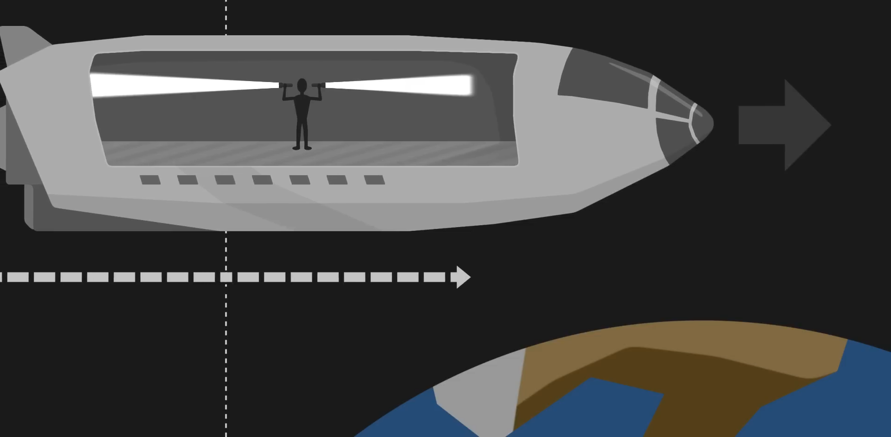

Պատկերացնենք տիեզերանավ և մոլորակ մեկուսացված տիեզերքի խորքում
Ենթադրենք տիեզերանավը շարժվում է հարաբերական մոլորակին ուղիղ հետագծով հաստատուն արագությամբ
Տիեզերքի հիմնարար հատկություներից է որ անհնարին է ասել թէ այս դեպքում Աստղանավնե շարժվում թէ աստզանավը անշարժ է և այլ մոլորկան է շարժվում հակարակ ուղությամբ։ Սա հայտնի է որպես հարաբերականության սկզբունքը
Ինչ տեսակետ էլ որ վերցնենք, քանի դեռ շարժումը տեղի է ունենում ուղիղ գծով հաստատուն արագությամբ, հավասարապես ճիշտ է համարել, որ դա աստղանավն է կամ մոլորակը, որը շարժվում է։
Հիմա պատկերացնենք ուղեվորդ աստղանավի մեջ որը ուզենա գցել գնդակ, իրա համար գնդակը շարժվում է որոշակի արագությամբ, այս արագությունը պարզապես համապատասխանում է գնդակին տրված իմպուլսին
բայց եթե նույն փորձը դիտարկենք մոլորակի տեսանկյունից, գնդակը կարծես ավելի արագ է շարժվում քանի որ դրա իմպուլսի արագությունը գումարվում է աստղանավի արագության հետ,
տարորինակ բանը այն է որ եթե փորձենք նույն փորձը կատարել լույսի հետ, ոկտագորցելով լապտեր օրինակի համար, մենք տեսնում ենք, թե որ տեսակետից էլ որ վերցնենք լույսի արագությունը մնում է նույնը, անկախ նրանից՝ մենք այն անշարժ ենք դիտում, թե շարժվելիս
մենք ասում ենք, որ լույսի այս արագությունը անփոփոխ է, լույսի արագությունը համընդհանուր հաստատուն է, 299 792 458 մ/վ , հիմնարար, մեր տիեզերքի կառուցվածքի հիմքում, մեր առօրյա կյանքում արագությունը չափազանց արագ է, որպեսզի մենք կարողանանք տեսնել սկզբունքը, միայն մի ակնթարթում լույսը վեց անգամ անցնում է Փարիզի և Նյու Յորքի միջև:
Հատուկ Հարաբերականության տեսության մեջ մեկ հիմնարար գաղափարն այն է, որ երկու իրադարձություն կարող են տեղի ունենալ միաժամանակ մեկ անձի համար, բայց տարբեր պահերին մեկ ուրիշի համար:
Պատկերացնենք աստղանավի մեջ մի մարդ պահում է երկու լապտեր, մեկը պահում է հետև մյուսը առաջ, իրա դերը կլինի միաժամանակ միացնել լապտերը, Նա վառում է երկու լապտերը,
Քանի որ իրա տեսանկյունից աստղանավը դադար է
լույսի ճառագայթները կտարածվեն միաժամանակ երկու կողմին, աստղանավի ուղեորդի համար իրադարձությունը կատարվեց միաժամանակ,
Բայց պատկերացնենք նույնը բայց արդեն մոլորակի վրա գտնվողի տեսակետից, Մենք կմտացենք որ լույսը նորից հավասարաչափ կտարացվի, բայց միաժամանակ մեր աստղանավը շարժվում է, դրա պատճարով, լույսի ճառագայթը ուղղորդված աստղանավի շարժվելու հետագծով, կհասնի ավելի ուշ քան լույսի ճառագայթը դեպի հակարակ ուղությամբ, ապա այս տեսակետից եզաց իրադարձությունները միաժամանակ չեն

Այս պարադոքսը բացատրելու համար մենք պետք է մի կողմ դնենք ժամանակի մեր ինտուիտիվ հասկացումը, նախկինում, եթե լուսային ճառագայթը աստղանավի հետեվնե հասնում ավելի արագ, քան հակառակ կողմում, իրականում դա տեղի է ունենում, քանի որ աստղանավի հետևի մասը ապագայում փոքր-ինչ համեմատած նավի դիմացը։ Եթե նավի կենտրոնում ժամը 12։00-է նավի հետևում արդեն կարող ե լինել 13։00 և դիմացը 11։00, բայց նավի ուղերթողի տեսակետից, իրա համար բոլոր կետերում ժամացուցերը համաժամանակացված են, դա շարժվող կետից դիտելու ակտ է, որը համաժամանակացնում է հետևի և առջևի ներքին ժամացույցները մեկից և մյուսից:
ավելի ընդհանուր առմամբ, երբ առարկան մեզ հետ համեմատած շատ մեծ արագությամբ է շարժվում, առարկայի առջևի հատվածը ժամանակի հետ է մնում հետևի նկատմամբ։
Այս երևույթի հետևանքներից մեկը երկարության կծկումն է, երբ այն դիտվում է մոլորակից, աստղանավի թիկունքը ապագայում է, բայց քանի որ տիեզերանավը ժամանակի մեջ է շարժվում, եթե նավի հետևը ապագայում է, ապա այն նույնպես մի փոքր առաջ է, համեմատած իր շարժման հետ, հավասարապես, Առջևը մի փոքր հետ է, համեմատած աստղանավից, ուստի նավի գլոբալ երկարությունը իրեն կրճատված է համարում շարժման ուղությամբ
որքան մոտենում ենք լույսի արագությանը, այնքան այս երևույթը կարևորվում է:
Եթե աստղանավը կարող է շարժվել լույսի արագության 85%-ով, ապա նրա երկարությունը կկրճատվի Կեսով, իսկ եթե շարժվի լույսի արագության 99,5%-ով, մենք կդիտարկենք նրա սկզբնական երկարության տասորդը:
Մոլորակից աստղանավը շատ կծկված կթվա, բայց աստղանավում գտնվող ուղևորի տեսանկյունից ոչ թե աստղանավն է կծկվում, այլ մոլորակը, քանի որ մոլորակն է շարժվում նրա տեսանկյունից:
Երրորդ հետևանքն այն է, ինչ մենք անվանում ենք ժամանակի լայնացում
Նորից պատկերացնենք մարդ աստղանավի մեջ բայց այս անգամ լապտերը պահելով վերև, տվաց պահին նա կմիացնի լապտերը և կչափի տրվող ժամանակ լույսի համար հասնլեու գագաթին, եթե հիմա դիտարկենք նույնը մոլորակի տեսակետից, աստղանավը և ամեն ինչը ներսը շարժվում է, լույսի ճառագայթը պետք է անցնի ոչ միայն մինչև գագաթ, այլև աստղանավի շարժման ուղղությամբ
Ընդհանուր առմամբ, մոլորակից դիտորդը կտեսնի տիեզերանավի ներսը, որը զարգանում է դանդաղ շարժումով, եթե համեմատենք նավի ուղեվորդի ժամացույցը մոլորակից դիտորթի հետ, կտեսնենք որ ուղևորդի ժամացույցը ավելի դանդաղ է դիտորտից
Ընդհանրապես, երբ օբյեկտը շարժվում է մեզ հետ համեմատած մեծ արագությամբ, մենք տեսնում ենք նրա հետևի և առջևի ապասինխրոնիզացվածությունը, նրա երկարությունը կծկվել է և նրա էվոլյուցիան դանդաղ շարժումով: